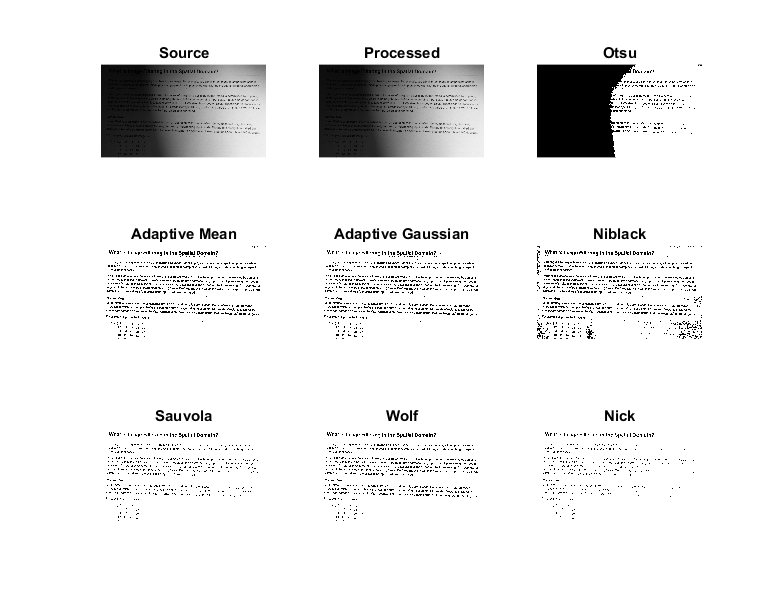

Contents
Niblack Image Thresholding
Sample to compare Niblack thresholding against other algorithms (global thresholding and adaptive thresholding) for an image with varying illumination.
Sources:
function niblack_thresholding_demo() % Input 8-bit grayscale image + Parameters % - BS: block size (local neighborhood) [niblack, adaptive] % - K : constant multiplied by std dev next subtracted from mean [niblack] % - C : constant subtracted from mean [adaptive] if ~mexopencv.isOctave() && mexopencv.require('images') % image with dark pixels being foreground im = which('printedtext.png'); K = -0.7; C = 7; elseif true % image with dark pixels being foreground im = fullfile(mexopencv.root(),'test','sudoku.jpg'); K = -0.7; C = 7; elseif ~mexopencv.isOctave() && mexopencv.require('images') % image with white pixels being foreground im = which('rice.png'); K = 0.7; C = -17; end assert(~isempty(im) && exist(im, 'file') == 2); img = cv.imread(im, 'Grayscale',true); BS = min(floor(size(img)/16) * 2 + 1); assert(~isempty(img), 'Failed to load image'); % Preprocess image if true % no processing src = img; elseif false src = cv.medianBlur(img, 'KSize',3); elseif true % really effective for global thresholding [otsu] src = localNormalization(img, 11, 33); else % rice image, estimate and subtract non-uniform illumination background % (see NonuniformIlluminationExample.mlx example) if mexopencv.require('images') src = imtophat(img, strel('disk',15)); src = imadjust(src); else el = cv.getStructuringElement('Shape','Ellipse', 'KSize',[15 15]*2-1); src = cv.morphologyEx(img, 'Tophat', 'Element',el); obj = cv.SimpleWB(); src = obj.balanceWhite(src); end end % Threshold opts = {'Type','Binary', 'MaxValue',255}; bw1 = cv.threshold(src, 'Otsu', opts{:}); bw2 = cv.adaptiveThreshold(src, 'Method','Mean', ... 'C',C, 'BlockSize',BS, opts{:}); bw3 = cv.adaptiveThreshold(src, 'Method','Gaussian', ... 'C',C, 'BlockSize',BS, opts{:}); bw4 = cv.niBlackThreshold(src, K, 'Method','Niblack', ... 'BlockSize',BS, opts{:}); bw5 = cv.niBlackThreshold(src, -K, 'Method','Sauvola', ... 'BlockSize',BS, opts{:}); bw6 = cv.niBlackThreshold(src, -K, 'Method','Wolf', ... 'BlockSize',BS, opts{:}); bw7 = cv.niBlackThreshold(src, K, 'Method','Nick', ... 'BlockSize',BS, opts{:}); %bw8 = my_niblack(src, K, BS); % Results subplot(331), imshow(img), title('Source') subplot(332), imshow(src), title('Processed') subplot(333), imshow(bw1), title('Otsu') subplot(334), imshow(bw2), title('Adaptive Mean') subplot(335), imshow(bw3), title('Adaptive Gaussian') subplot(336), imshow(bw4), title('Niblack') subplot(337), imshow(bw5), title('Sauvola') subplot(338), imshow(bw6), title('Wolf') subplot(339), imshow(bw7), title('Nick') end
Helper function
function out = localNormalization(img, s1, s2) %LOCALNORMALIZATION local normalization to get uniform local mean and variance % % out = localNormalization(img) % out = localNormalization(img, s1, s2) % % The local normalization tends to uniformize the mean and variance of an % image around a local neighborhood. This is especially useful for correct % non-uniform illumination or shading artifacts. % % ## Input % * __img__ 8-bit input image % % ## Output % * __out__ output image of same size and type. % % ## Options % * __s1__ sigma to estimate the local mean. default 5 % * __s2__ sigma to estimate the local variance. Often `s2` should be % larger than `s1`. default 15 % % ## References % > http://bigwww.epfl.ch/sage/soft/localnormalization/ % % check arguments if nargin < 2, s1 = 5; end if nargin < 3, s2 = 15; end validateattributes(img, {'uint8'}, {}); % convert to grayscale if size(img,3) == 3 gray = cv.cvtColor(img, 'RGB2GRAY'); else gray = img; end % convert to floating-point image gray = cv.convertTo(gray, 'RType','single', 'Alpha',1.0/255.0); % numerator = img - gauss_blur(img) blur = cv.GaussianBlur(gray, 'KSize',[0 0], 'SigmaX',s1, 'SigmaY',s1); num = gray - blur; % denominator = sqrt(gauss_blur(img^2)) den = sqrt(cv.GaussianBlur(num.^2, 'KSize',[0 0], 'SigmaX',s2, 'SigmaY',s2)); % output = numerator / denominator out = num ./ den; % normalize output into [0,1] out = cv.normalize(out, 'Alpha',0.0, 'Beta',1.0, 'NormType','MinMax'); % convert to 8-bit out = cv.convertTo(out, 'RType','uint8', 'Alpha',255.0); end function bw = my_niblack(img, K, BS) %MY_NIBLACK Manual implementation of Niblack thresholding img = im2double(img); mu = imboxfilt(img, [BS BS]); sd = sqrt(imboxfilt(img.^2, [BS BS]) - mu.^2); bw = img > (mu + K*sd); end